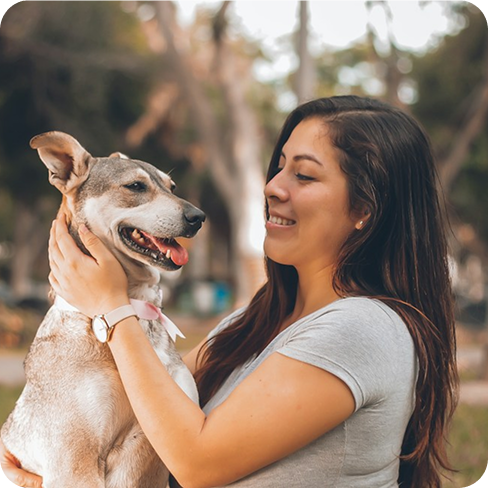

Escolha seu Pet
Navegue pelos perfis e encontre o amigo que combina com você.
Conectamos animais resgatados a famílias dispostas a dar um lar cheio de carinho, cuidado e muito amor. Adotar muda duas vidas.

Cada um tem uma história e um enorme coração para dar.
Um processo simples, seguro e feito com carinho para você e para o pet.
Navegue pelos perfis e encontre o amigo que combina com você.
Conte um pouco sobre você, sua casa e sua rotina.
Nossa equipe conversa com você e conhece o novo lar.
Assine o termo e leve seu novo melhor amigo para casa.
Veja o que dizem quem já abriu as portas para um novo amigo.
Adotar a Luna foi a melhor decisão da nossa vida. O processo foi acolhedor e a equipe nos acompanhou em tudo.
Meu filho e o Thor são inseparáveis. Ele chegou tímido e hoje é o coração da nossa casa.
Fiquei impressionada com o cuidado da ONG. A Mimi chegou vacinada, castrada e cheia de amor.
Sua ajuda faz toda diferença!